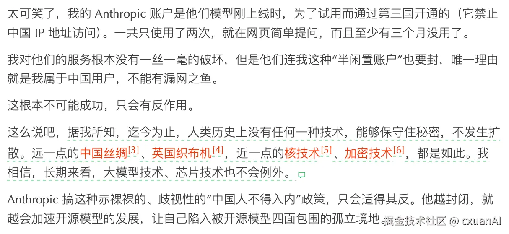
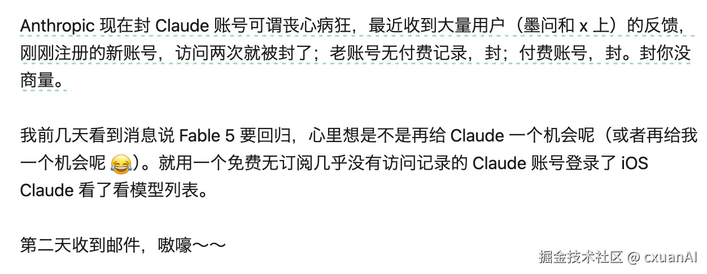
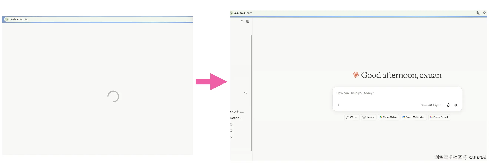
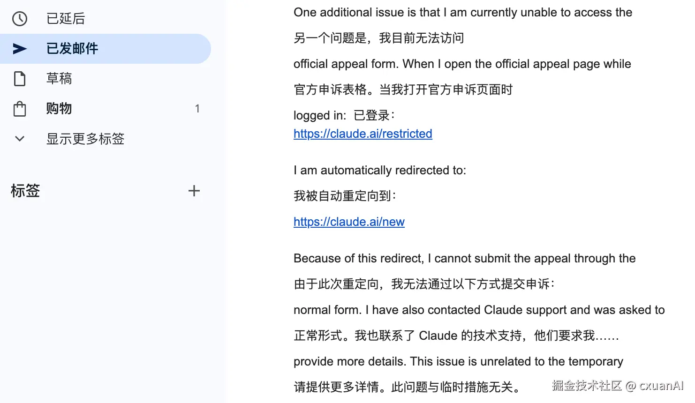
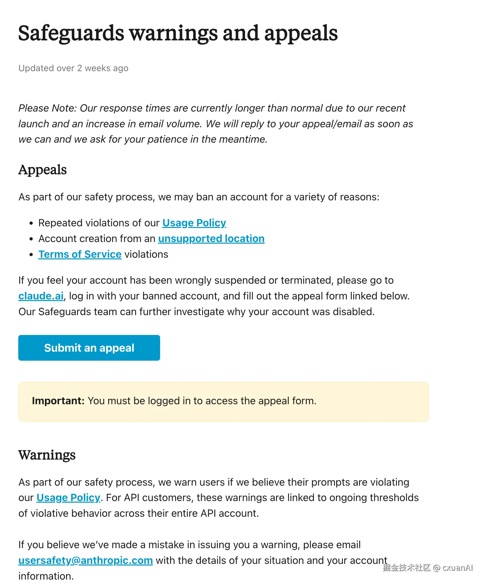

Anthropic enacts mass account suspensions, drawing public backlash from prominent influencers.
Anthropic enacts mass account suspensions, drawing public backlash from prominent influencers.
Numerous users — including this author — have received Claude Code termination notices.
Despite three months of uninterrupted use via an App Store subscription with no policy violations, Anthropic issued a summary termination two days ago without prior warning.
Frankly, the notification elicited more irony than shock. No terms were violated nor the API abused, yet Anthropic apparently concluded otherwise — terminating the account without so much as a preliminary warning.

Ruan Yifeng, the respected tech commentator, was also suspended. He bypassed his usual Friday newsletter schedule to voice his criticism immediately.

Chi Jianqiang likewise voiced his frustration.

The most Kafkaesque detail: the termination notice contained an appeal link that merely redirected to the Claude Code web interface — a circular dead end.

Reporting the issue to official support yielded only the instruction to return to the original appeal submission page.


The appeal page consistently redirects back to the Claude Code web interface.
Appeal link → web redirect → support directs you back to the appeal page → another web redirect…
What manner of operational absurdity is this?
Is this an exercise in infinite recursion?
Is the entire operation truly this amateurish?
Unable to tolerate the situation further, I proceeded to cancel my subscription.
It remains to be seen whether Anthropic will issue a refund for the subscription fee.
Anthropic's handling of this episode is deeply disappointing. Despite possessing infrastructure-grade product capabilities, the company manages user relations with an amateurish lack of professionalism. Technical excellence, unaccompanied by basic respect and dignity, ultimately commands no loyalty — and earns no place at the table.